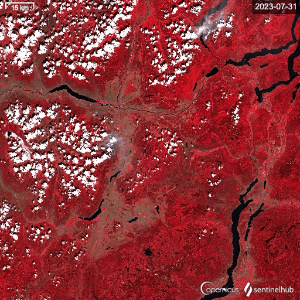
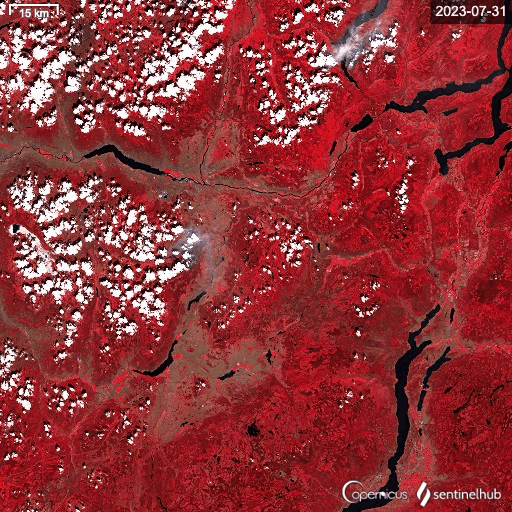

Overview
安井 秀輔[Yasui Syusuke]の自己紹介ページです。
衛星データ解析、レーダー・信号解析、コンピュータービジョン・データサイエンス、点群データ処理、GISデータ処理などの技術に興味を持っています。
お仕事としては、衛星データ処理講師や公演会登壇、技術コンサルなどの活動も行っています。また、Zenn, 宙畑, 技術書籍の執筆も行っています。
GALLERY


Interest
-

光学画像解析
-

レーダー・信号解析
-

コンピュータービジョン・AI・データサイエンス
-

地理空間(GIS)・点群データ・3D処理
Work

所属: スペースシフト 技術開発部 Core Tech Section Lead・テックリード
SAR 解析 & 研究開発

活動:
衛星データ処理の講師や公演会登壇
 

副業:
技術コンサルや技術書・Webライター
Article

Zenn: 記事一覧
Segmentation Models Pytorch の BackBone をカスタムする方法
地形の高さ (DEM, DSM, nDSM) を点群データ(オープンナガサキ)から生成する
１歩目の衛星データの取得判読解析予測の基礎

宙畑: 記事一覧
【徹底解説】第3の分解能に特化したハイパースペクトルデータの概要と解析方法、代表企業まとめ
レーダーの基礎から学ぶSAR(合成開口レーダー)の原理と奇跡【SARデータ解析者への道】
GDALのおすすめコマンド5選と使用例【地理空間処理のいろは】

Acount
Activity

学会参加:
・国際カンファレンス
ECML, MVA, IGRASS, IEEE, EDHP・国内学会
IEEE Geoscience and Remote Sensing Society Japan Chapter (SAR Workshop 2023), JpGU (日本地球惑星科学連合) IEEE Geoscience and Remote Sensing Society Japan Chapter, 宇宙科学技術連合講演会（宇科連66: ウカレン）日本地モートセンシング学会 第78回（令和7年度春季）学術講演会開催
コンペティション参加:

国土交通省 PLATEAU AWARD 2024 PLATEAU賞 受賞
NEDO Supply Chain Data Challenge システム開発部門（災害）1位
ChaBuD2023 2nd, Solafune GenerativeAI 3rd
MVA2023 Res 5th, SpaceNet8 7th
国内特許・海外特許:
特許第 7534744 号 RAW 解析
特許第 7571960 号 Vコンステ
趣味活動:
ウクライナの探索レーダーによる干渉を Sentinel-1 のサブアパチャー動画にして可視化pic.twitter.com/XJLFcoNhKa
— emmyeil (@emmyeil) March 28, 2024
Sentinel-1 subaperture pseudo color
— emmyeil (@emmyeil) March 28, 2024
Moving Target Radar Jamming pic.twitter.com/jJWZtRp4hi
Contact
-
個人 E-Mail: syuchimu@gmail.com
ご連絡お待ちしております。
-